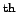

Next: Setting the errors Up: Calculating the NOE Previous: Initialisation of the run Contents Index
The first thing which need to be completed prior to any residue specific command is to load the sequence. In this case the command
pdb(name, `Ap4Aase_new_3.pdb', load_seq=1)
will extract the sequence from the PDB file `Ap4Aase_new_3.pdb'. The first argument specifies the run into which the sequence will be loaded, the second specifies the file name, and the third causes the function to extract the sequence rather than just load the PDB into relax. Although the PDB coordinates have been loaded into the program the structure serves no purpose when calculating NOE values.
The next two commands
noe.read(name, file=`ref.list', spectrum_type=`ref')
noe.read(name, file=`sat.list', spectrum_type=`sat')
load the peak heights of the reference and saturated NOE experiments (although the volume could be used instead). The keyword argument format has not been specified hence the default format of a Sparky peak list (saved after typing `lt') is assumed. If the program XEasy was used to analyse the spectra the argument format='xeasy' is necessary. The first column of the file should be the Sparky assignment string and it is assumed that the 4  column contains either the peak height. If you have any other format you would like read by relax please send an email to the relax development mailing list detailing the software used, the format of the file (specifically where the residue number and peak intensity are located), and possibly attaching an example of the file itself.
Edward d'Auvergne 2007-10-21